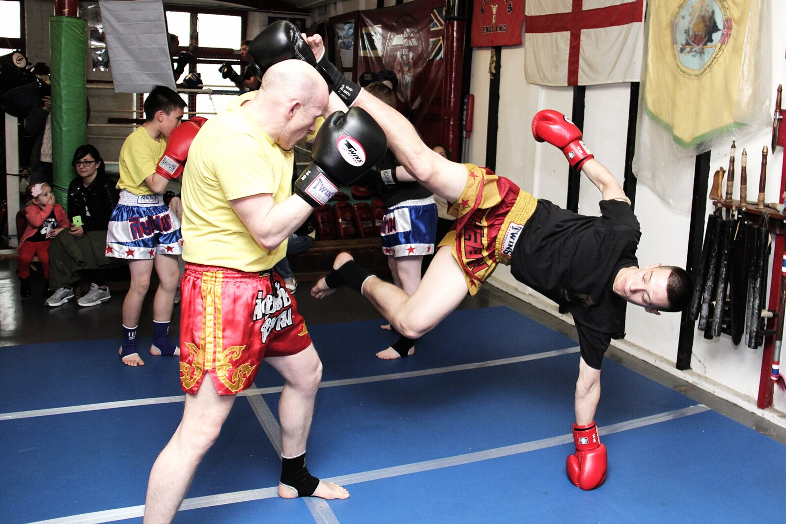

Muay Thai · Kick
Teep (Push Kick)
The teep is Muay Thai’s push kick: a hip-driven thrust that manages range, disrupts rhythm, and sets the rest of the eight limbs.
What Is Teep (Push Kick)?
The teep (push kick) is Muay Thai’s primary long-range tool—functionally a kicking jab. From Muay Thai Stance, you chamber the knee and thrust the hip so the ball of the foot pushes the opponent off their line.
It belongs in the Eight Limbs map as a foot weapon that buys time for Jab, Body Kick, or a safe exit.
Searchers looking for “push kick Muay Thai” want mechanics and tactics, not a karate front-kick clone—the teep pushes through; it does not only snap.
Martial Index files Teep (Push Kick) under Muay Thai so searchers get definition, mechanics, and live batch links—not a thin glossary stub.
Read this beside the Eight Limbs map when you need the full weapon system; keep the focus on how Teep (Push Kick) behaves in stance, range, and exchanges.
How Teep (Push Kick) Works
Chamber knee high, toes pulled back, thrust hip into the target, hit with the ball of the foot, retract to stance with hands up.
Lead teep is faster for rhythm breaks; rear teep carries more stopping power after a weight shift.
Timing: meet their step. Late teeps become pushes they walk through; early teeps land as they commit.
Guard stays alive—dropping both hands while teeping is how you eat counters.
Mechanically, successful teep (push kick) work is usually a chain: stance integrity → timing → impact or control → recovery to Muay Thai Stance with hands alive.
If Range is wrong, even perfect form fails—too far and you claw air; too close and you collide into elbows or clinch threats you did not plan.
Pair offense with the defensive layer this tool implies: kicks need Kick Check awareness; pocket strikes need Long Guard or tight covers; clinch tools need posture.

Stadium vs Gym / Rules Notes
Under traditional stadium Muay Thai, teep (push kick) lives inside a full Eight Limbs rule set—elbows, knees, and clinch time change how often you invest in this tool.
Amateur cards, kickboxing crossovers, and some promotions restrict elbows or clinch duration. Gym culture may still drill teep (push kick) daily; fight night may shrink the toolkit.
Confirm the bout agreement before importing stadium frequency into restricted rules or MMA, where wrestling reframes clinch incentives.
Scoring emphasis varies. Some judges still reward hard kicks and balance; others read more like kickboxing. Let the card’s eyes shape volume.
What Does It Look Like in Practice?
They walk down: lead teep to belt line, reset, Jab-Cross.
Feint teep, Switch Kick or rear Body Kick as they freeze.
Teep the thigh to spoil a kick load, then step off.
Fight picture: teep (push kick) appears when Range and Timing say so, then yields to the next limb in the Eight Limbs chain.
Gym test: can you apply teep (push kick) after a Jab feint (or a teep feint) and still recover your guard? If not, connect it to combinations instead of isolating forever.
Types / Variations
Lead teep
Fast probe from the front leg; primary range finder.
Drill this variation with movement—step in, step out, and reset—so it survives sparring pressure, not only pad stations.
Rear teep
Bigger stop after weight transfer—punishes blitzes.
Drill this variation with movement—step in, step out, and reset—so it survives sparring pressure, not only pad stations.
Targets
Thigh, hip/belt, solar plexus, sometimes face—pick by risk.
Drill this variation with movement—step in, step out, and reset—so it survives sparring pressure, not only pad stations.
Side / angle teep
Angled push that uses a slight turn for longer reach and different lane.
Drill this variation with movement—step in, step out, and reset—so it survives sparring pressure, not only pad stations.
Common Mistakes
- Pushing only from the knee.
- Leaning way back.
- Dead hands.
- No retraction—leg gets caught.
- Teeping when already too close.
- Treating teep (push kick) as a highlight instead of a range-and-timing skill.
- Skipping recovery—landing then posing with hands down.
- Ignoring sibling tools that set or cover the technique.
Training Notes
Shadowbox teep (push kick) inside full rounds; return to Muay Thai Stance after every attempt.
Pads: technical → moving → forced follow-up (punch, kick, or clinch) so teep (push kick) connects to Eight Limbs.
Partner drills beat bag-only fluency; feed realistic rhythm so Timing is part of the skill.
Film sparring weekly and ask whether teep (push kick) appears in the right Range band.
Progress intensity with a coach—especially for elbows, flying knees, and catch-heavy games.
Wall drill: teep without peeling your back off the wall to force hip drive.
Study Notes
Coaches often describe teep (push kick) as “simple to show, hard to own.” The gap is usually not a missing secret—it is missing reps under stress, poor Range, or a stance that collapses when kicks and clinch enter the round.
When you compare gyms, you will see stylistic accents: some put teep (push kick) behind heavy boxing; others behind teeps and body kicks; stadium-oriented rooms may emphasize clinch delivery. The encyclopedia definition stays stable even when accents change.
Use internal links in this entry as a study path—move from pillars like Teep (Push Kick), Thai Clinch (Plum), and Muay Thai Stance into siblings, then return here after sparring to re-read mistakes with fresh context.
Safety note: encyclopedia pages are reference material, not live coaching. Train under qualified instructors, especially for elbows, knees, and catch-kick dumps where mistiming injures partners.
Keep vocabulary precise. Fighters overload words like “clinch,” “guard,” and “timing.” Martial Index’s Muay Thai entries keep teep (push kick) scoped so you are not dumped into unrelated BJJ articles that share casual language.
A practical weekly plan: two technical rounds focused on teep (push kick), one situational sparring theme that forces it, and one film review asking where Timing failed.
If you compete, write a one-line rule note for teep (push kick) under your next card (elbows allowed? clinch time? scoring bias?) so training intensity matches the bout, not a generic Instagram Muay Thai.
Related reading inside this batch should feel like a cluster, not a random walk: return to Eight Limbs when you forget why a tool exists, and to Range when techniques “stop working” for mysterious reasons.
FAQ
Questions we hear on the mats, in forums, and under instructional videos—answered in Martial Index voice.
Teep vs front kick?
Teep emphasizes push/hip thrust for control; many front kicks emphasize snap.
Lead or rear first?
Lead for rhythm; rear for stop—train both.
Shoes/MMA?
Mechanics similar; footwear and wrestling change follow-ups.
Defend teeps?
Parry, catch, cross-cut, or step offline—see Cut Kick concepts.
Score with teeps?
Visible disruption and balance breaks score; flicky taps less so.
The Bottom Line
Own the teep as your range remote—hip through the target, hands up, and a plan for the next limb.